同样达到 BER≈8e-4：分量码需 ~1.8 dB，SC 仅需 0.8 dB → 耦合增益 ≈ 1.0 dB； 滑窗译码(W=8)以远低于 L 的时延逼近全图 BP。
分量码为真实 3GPP TS 38.212 基图（BG2）；空间耦合采用系统位边扩展 + 终止，
全图置信传播译码。下列每图横轴 Eb/N0 [dB]，纵轴 BER（半对数）。
同样达到 BER≈8e-4：分量码需 ~1.8 dB，SC 仅需 0.8 dB → 耦合增益 ≈ 1.0 dB； 滑窗译码(W=8)以远低于 L 的时延逼近全图 BP。

码率（低/中，BG2） R∈{0.20,0.33,0.50}：每个码率 component vs SC， 耦合增益 ~0.9 dB 在各码率上一致保持。

码率（高，BG1） R∈{0.60,0.71,0.79,0.92}：BG2 上限约 0.83，故高码率改用 5G NR BG1（K_b=22）。瀑布随码率整体右移，耦合增益在高码率仍保持。

码长（提升尺寸 Z∈{16,32,64}）：Z 越大，瀑布越陡、错误地板越低 （有限长效应减弱）。

耦合链长 L∈{8,16,40}：L 越大，错误地板越低、阈值趋于饱和； 小 L 终止码率损失更大。

耦合深度 w∈{1,2,4}：w 越大耦合越强、瀑布越陡，但收益递减且码率损失增大。

大 L 下全图 BP 不可行（译码波需 O(L) 次迭代才能穿过链），故用滑窗译码器 （时延/复杂度 ~W，与 L 无关）。L 增大时瀑布收敛到一个极限——这就是阈值饱和： 超过某个 L 后再加长链不再改善门限（只继续消除已很小的码率损失）。

R≈0.70：高码率下随 L 增大的阈值饱和（各 L 曲线）。

R≈0.78：高码率瀑布更陡、整体右移。

R≈0.92：极高码率（仅核 4 行），观察大 L 是否仍能压低错误地板。
更贴近实际的链路：编码比特 → PAM4(Gray) → 上采样×4 → RRC 成形 → 波形加 AWGN → RRC 匹配滤波 → 降采样 → 软解调(LLR) → 滑窗 BP。每码率一张图：含普通 5G NR LDPC 对照组 （同码率同码长、全图 BP）+ 不同耦合链长 L 的 SC 曲线。
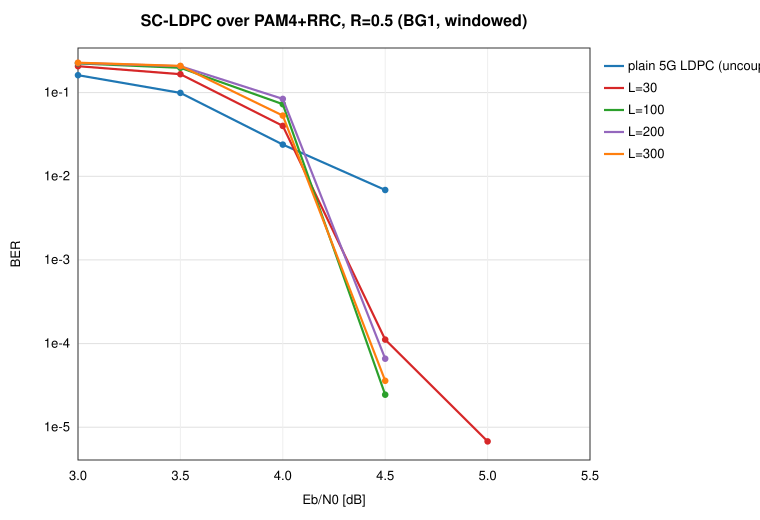
R≈0.5
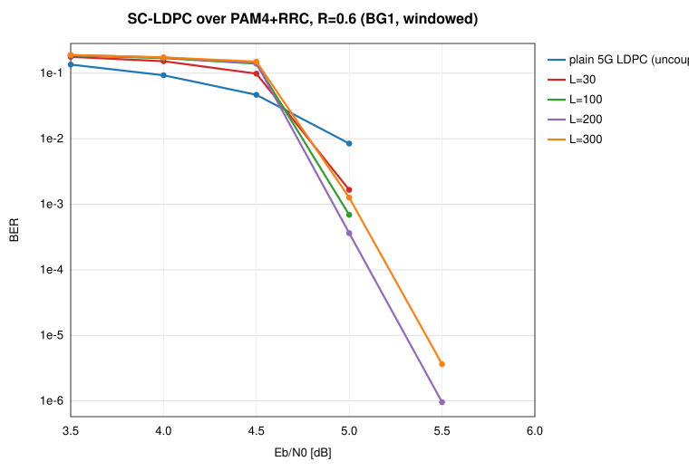
R≈0.6
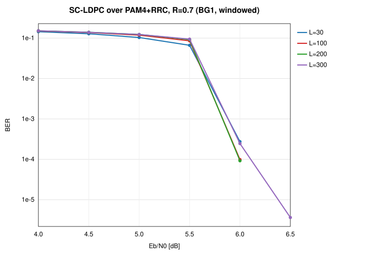
R≈0.7
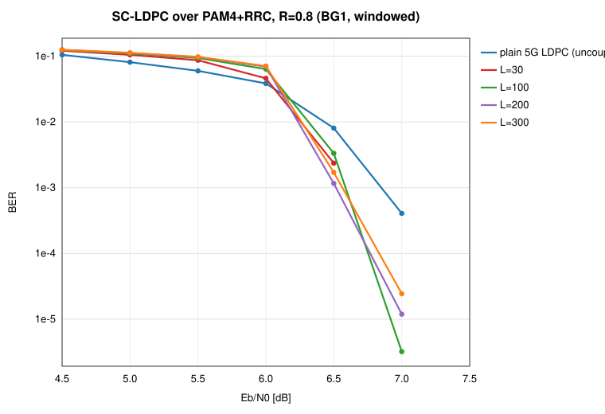
R≈0.8
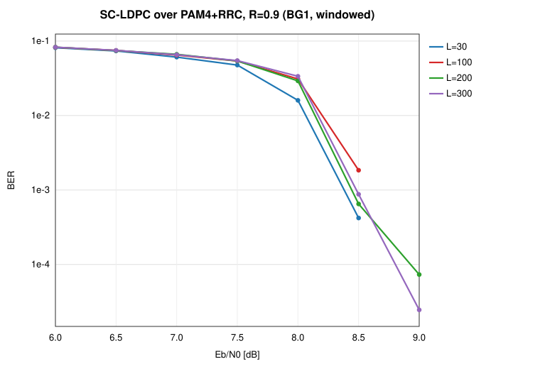
R≈0.9
每格 = 在该码率工作点 Eb/N0 处的 BER（绿=低/更好，红=高）；行=码长 Z（3GPP 提升尺寸）， 列=耦合链长 L + plain（普通5G LDPC对照）。每个「码率×深度 w」一张图。
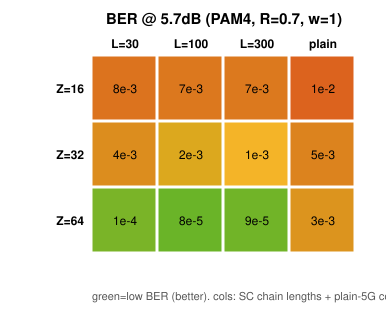
R=0.7, w=1
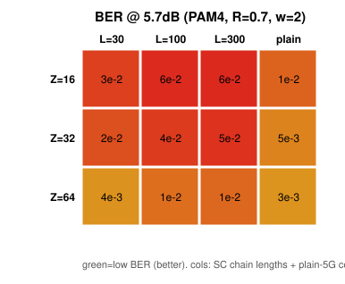
R=0.7, w=2
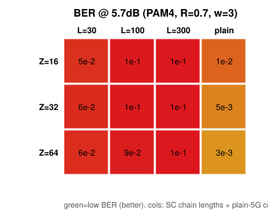
R=0.7, w=3
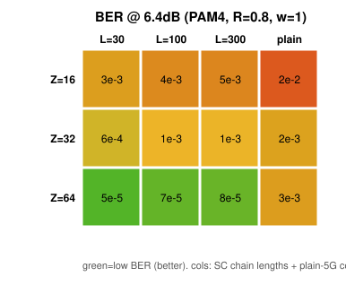
R=0.8, w=1
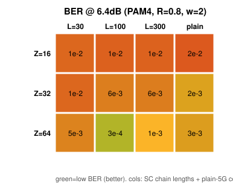
R=0.8, w=2
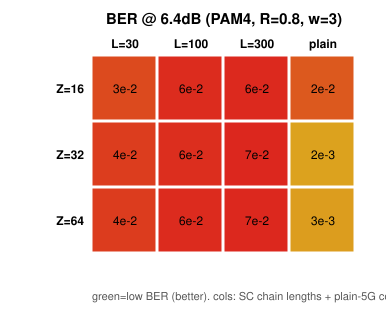
R=0.8, w=3
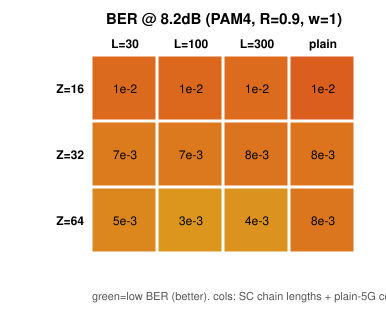
R=0.9, w=1
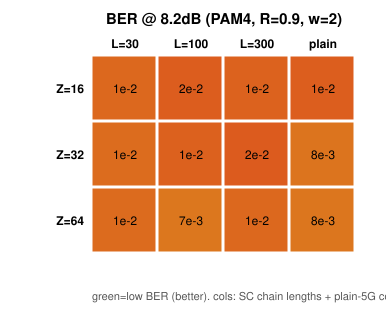
R=0.9, w=2
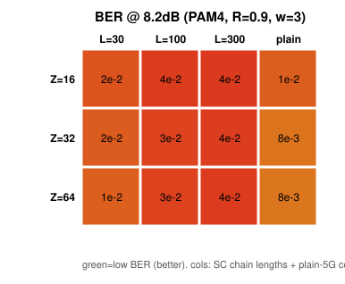
R=0.9, w=3
RL_CONSTRUCTION.md）用策略梯度 RL 学习"系统位边 → 分量 B0..Bw"的边扩展分配，奖励 = 真实收发链的误帧率。 仅这一个构造旋钮，FER 从 0.70（仓库默认随机 / 朴素均衡）降到 0.06–0.13（优化后，约 5–11×）， 并消除错误地板；RL 自动学出"同列边散开（避免 4 环）"这一可解释、可零样本迁移的规则。
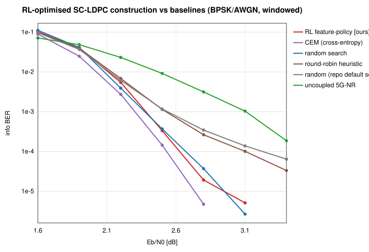
BER vs Eb/N0：优化构造（RL/CEM/随机搜索，均 0 个 4 环）无错误地板；仓库默认 seed0 与朴素 round-robin（~930 个 4 环）在 ~5e-5 起翘出现地板。未耦合 5G NR 分量码作参照。
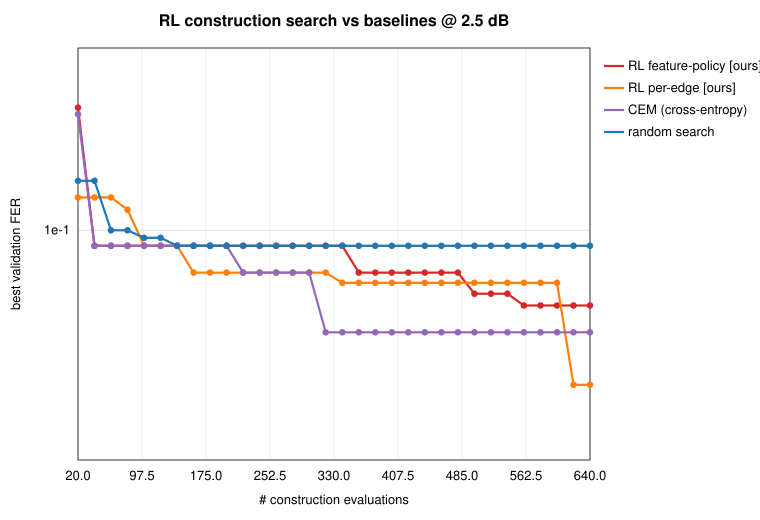
样本效率：同预算下随机搜索 ~140 次评估后卡在 FER≈0.09；RL/CEM 持续下探到 0.035–0.06。
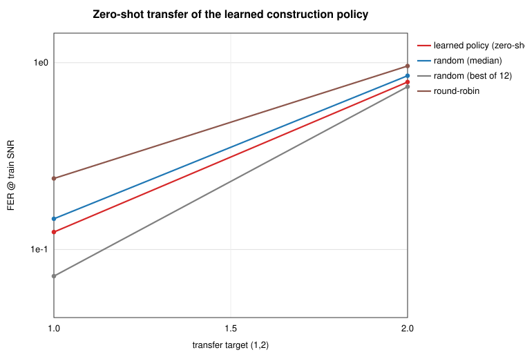
零样本迁移：把学到的 8 维权重原封搬到新码（Z=24 / mp=6）贪心造码，低于典型随机与 round-robin —— 说明学到的是结构性规则、而非对单一码的过拟合。
每码率自动选工作 SNR、训练 RL 特征策略 + 同预算随机搜索 + round-robin + 默认 seed0。 构造增益（RL vs 默认 seed0）在中码率 R≈0.6 最大（~0.9 dB），向高码率单调缩小——与 BP–MAP 门限差的理论一致（高码率本就接近 MAP）。
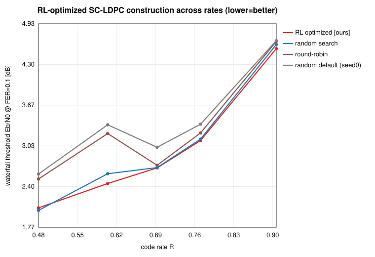
FER=0.1 瀑布门限 vs 码率（越低越好）：RL/随机优化两条线在 round-robin/默认之下， 间隙（增益）随码率收窄。
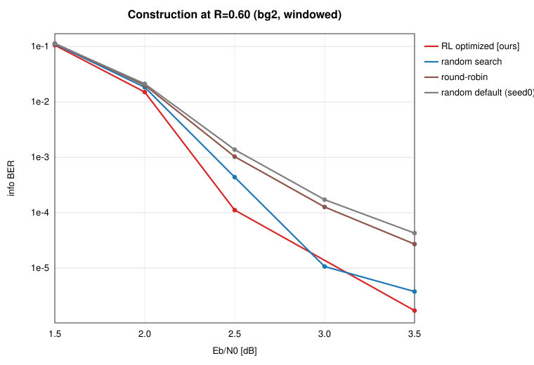
R≈0.60 BER：默认 seed0 有错误地板，RL 构造消除之（增益最大处 ~0.9 dB）。
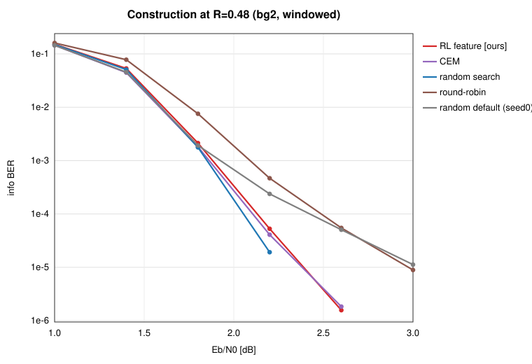
R≈0.48
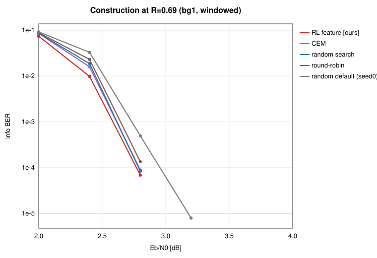
R≈0.69
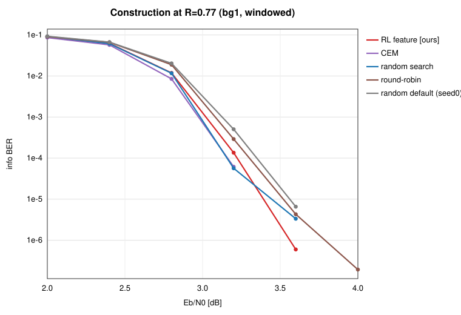
R≈0.77
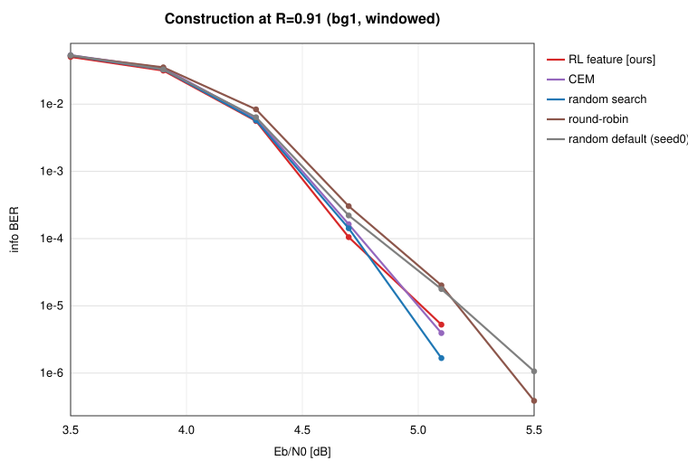
R≈0.91（高码率增益小）
原始数据见 results*.json / results.csv；构造与方法见 README.md。